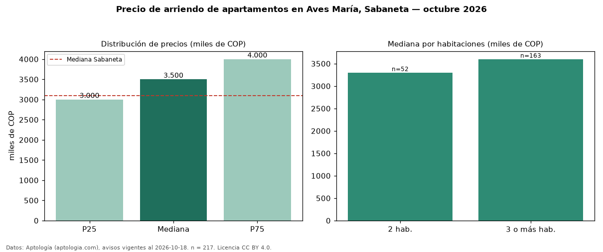

Precio de arriendo de apartamentos en Aves María, Sabaneta — octubre 2026
Con 217 avisos vigentes, el canon mediano de apartamentos en arriendo en Aves María, Sabaneta es COP 3,50 millones al mes. Eso es 13 % por encima de la mediana de Sabaneta para apartamentos (COP 3,10 millones). Por metro cuadrado, la mediana es COP 38.824/m² al mes (n = 215 avisos con área), 5 % por debajo de Sabaneta (COP 41.026/m²). Por precio mediano es el puesto 3 de 32 barrios de Sabaneta con al menos 30 avisos de apartamentos en arriendo (COP): entre las más caras. Con el precio por m² de venta del mismo segmento (COP 6,59 millones/m²), la rentabilidad bruta implícita es 7,1 % anual (aproximación con medianas de ofertas distintas). El área mediana anunciada es 90 m². El segmento con más oferta es el de 3 o más habitaciones (163 avisos, mediana COP 3,60 millones); pasar de 2 habitaciones a 3 o más habitaciones cambia la mediana +9 %. El estrato más frecuente es 4 (91 % de los avisos con estrato). Datos: Aptología (aptologia.com), CC BY 4.0 — https://www.aptologia.com/arriendo/sabaneta/aves-maria. Archivos: PDF, CSV con las cifras y gráfica PNG.

| Avisos únicos | 217 |
|---|---|
| Percentil 25 | COP 3.000.000 |
| Mediana | COP 3.500.000 |
| Percentil 75 | COP 4.000.000 |
| Mediana por m² | COP 38.823 |
Fuente: avisos vigentes de portales inmobiliarios recopilados por Aptología, deduplicados (mínimo 30 avisos únicos por celda). Precios pedidos, no cerrados. Fecha: 2026-10-18.